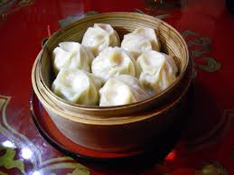
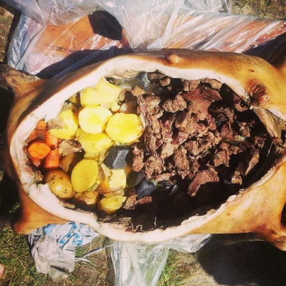
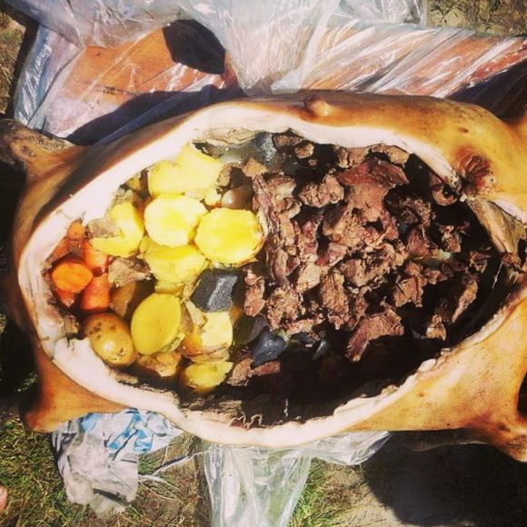

Culinária da Mongólia
A gastronomia mongol é uma experiência autêntica para quem visita o país. Baseada em carnes — como carneiro, boi e cavalo — e em laticínios, ela reflete o estilo de vida nômade e a necessidade de pratos calóricos para enfrentar o frio intenso das estepes. Entre os destaques estão o buuz (pastel cozido no vapor recheado com carne), o khuushuur (pastel frito) e o airag, bebida tradicional feita de leite de égua fermentado. Para os viajantes, provar esses sabores é mergulhar na cultura local, compartilhando da hospitalidade mongol em gers tradicionais ou nos mercados urbanos de Ulaanbaatar.
Pratos Típicos
1. Buuz (bolinhos cozidos no vapor)
Clássico da culinária mongol, o buuz é preparado com massa fina recheada de carne de carneiro ou boi, temperada com cebola e especiarias. Servido cozido no vapor, é especialmente popular durante o Tsagaan Sar, o Ano Novo Mongol. Além de alimentar, simboliza fartura e união familiar.


2. Khuushuur (pastel frito)
Uma versão crocante do buuz, o khuushuur é frito em óleo até dourar, lembrando um pastel recheado de carne suculenta. É muito consumido em festivais de verão e considerado um lanche prático para nômades em viagem


3. Boodog (carne assada na pele do animal)
Prato rústico e impressionante: a carne de cabra ou marmota é assada por dentro, com pedras aquecidas colocadas dentro do animal, garantindo sabor defumado e textura macia. Geralmente servido em ocasiões festivas e em encontros ao ar livre.
 

4. Airag (leite de égua fermentado)
A bebida nacional da Mongólia. Levemente alcoólica, refrescante e com sabor ácido, o airag é oferecido como sinal de hospitalidade em gers tradicionais. Mais do que uma bebida, é parte essencial das celebrações culturais.


5. Suutei Tsai (chá com leite e sal)
O “chá com leite” é a bebida do dia a dia dos mongóis. Feito com chá preto, leite, sal e às vezes manteiga, é energético e aquece nos invernos rigorosos. Frequentemente oferecido aos visitantes como gesto de boas-vindas.

Características Gerais
A gastronomia da região é uma experiência autêntica e cheia de sabor, marcada pelo uso abundante de carnes como carneiro, boi e cavalo — ingredientes centrais na dieta tradicional. Os laticínios fermentados, como iogurtes e queijos artesanais, também são bastante populares e refletem o saber ancestral das comunidades locais. Devido ao clima frio e seco, os vegetais frescos são menos comuns, o que torna as receitas mais robustas e calóricas — ideais para enfrentar as baixas temperaturas. Curiosidade: A culinária é um reflexo direto do estilo de vida nômade do povo, pensado para fornecer energia e resistência em um ambiente natural desafiador. Saborear esses pratos é, acima de tudo, vivenciar a cultura e a história da região de forma única.
RETORNAR PARA A PAGINA PRINCIPAL